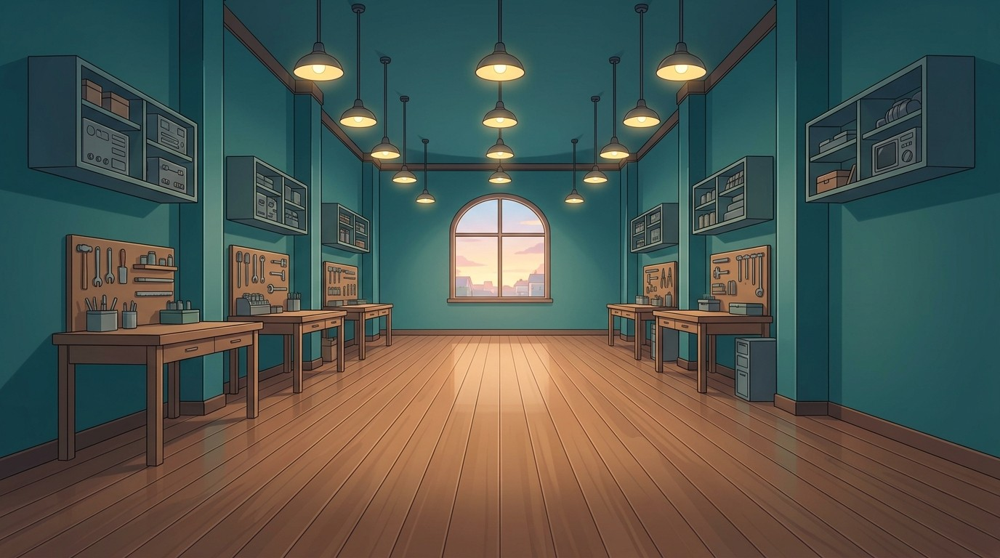
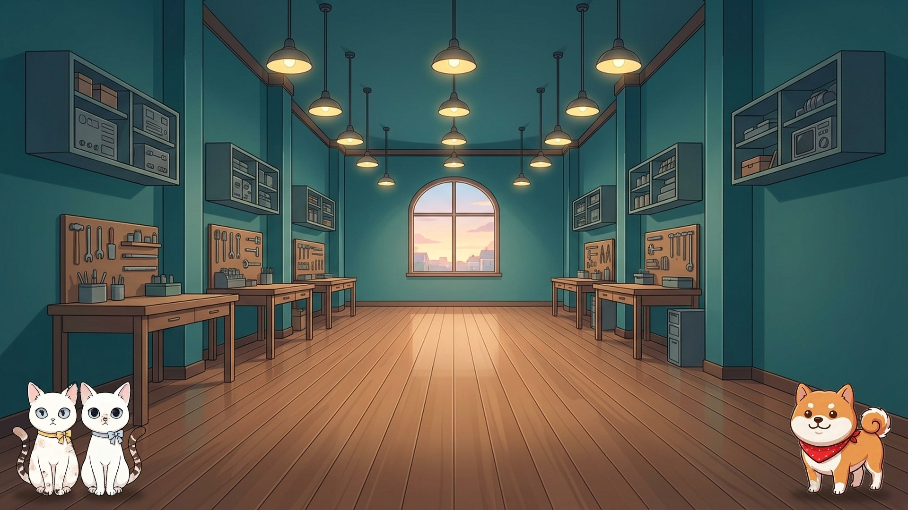
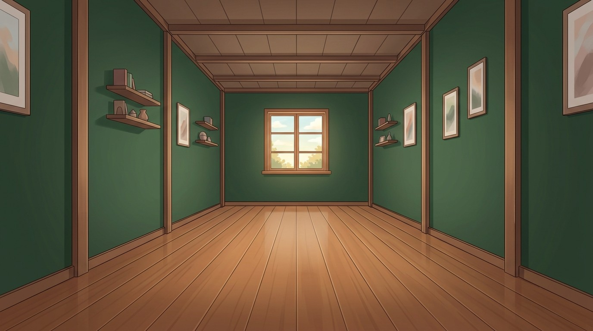
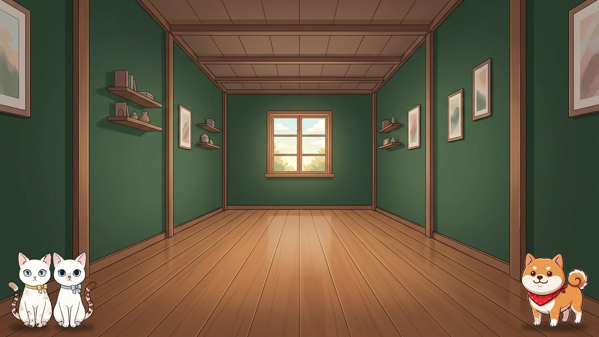
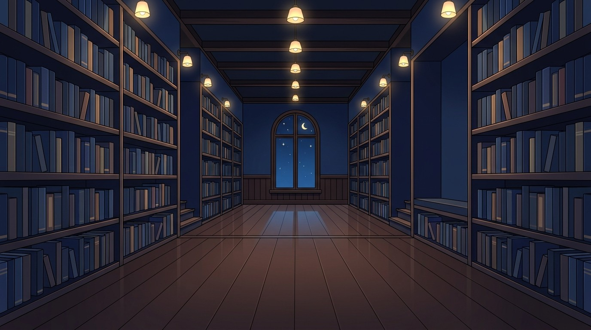
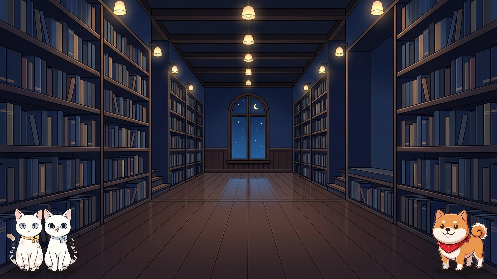

前回指摘の反映: ①手前1/3は床のみ（キャラ位置に家具・鉢植えなし=カブリ解消）②中央消失点の一点透視で奥行き ③細部はシンプル方向。
各候補とも「全景（カードなし）」→「キャラ配置＋接地影」の順。接地影はレンダリング側で常時入れる修正として実装します。

↓ キャラ配置＋接地影

作業台と工具ボードが両壁沿いに奥へ後退。奥のアーチ窓が消失点。修理工房テーマ

↓ キャラ配置＋接地影

「細部で破綻するくらいならシンプル」の極。黒板IGとの重複もなし

↓ キャラ配置＋接地影

書架が左右対称に後退、中央に星空の窓。書籍解説との親和性。夜トーン